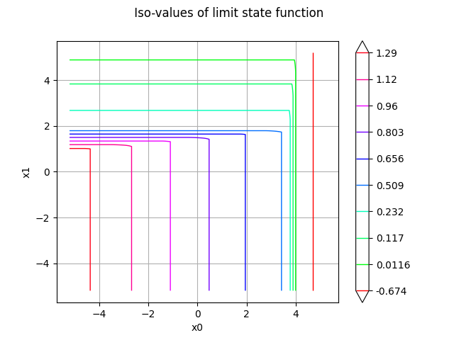
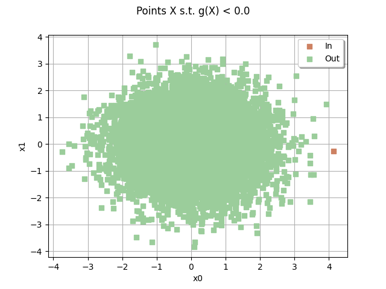
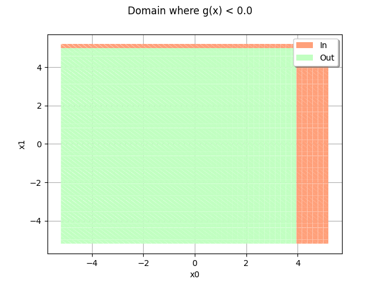
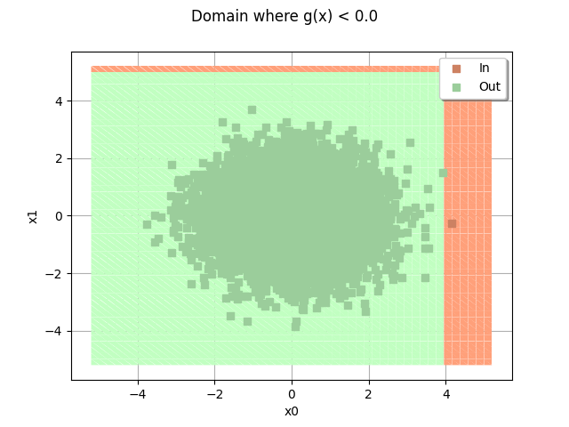

Note
Go to the end to download the full example code.
RP110 analysis and 2D graphics¶
The objective of this example is to present problem 110 of the BBRC. We also present graphic elements for the visualization of the limit state surface in 2 dimensions.
import openturns as ot
import openturns.viewer as otv
import otbenchmark as otb
problem = otb.ReliabilityProblem110()
print(problem)
name = RP110
event = class=ThresholdEventImplementation antecedent=class=CompositeRandomVector function=class=Function name=Unnamed implementation=class=FunctionImplementation name=Unnamed description=[x0,x1,gsys] evaluationImplementation=class=SymbolicEvaluation name=Unnamed inputVariablesNames=[x0,x1] outputVariablesNames=[gsys] formulas=[if (x0 <= 3.5)
var g1 := 0.85 - 0.1 * x0;
else
g1 := 4 - x0;
if (x1 <= 2.0)
var g2 := 2.3 - x1;
else
g2 := 0.5 - 0.1 * x1;
gsys := min(g1, g2);] gradientImplementation=class=SymbolicGradient name=Unnamed evaluation=class=SymbolicEvaluation name=Unnamed inputVariablesNames=[x0,x1] outputVariablesNames=[gsys] formulas=[if (x0 <= 3.5)
var g1 := 0.85 - 0.1 * x0;
else
g1 := 4 - x0;
if (x1 <= 2.0)
var g2 := 2.3 - x1;
else
g2 := 0.5 - 0.1 * x1;
gsys := min(g1, g2);] hessianImplementation=class=SymbolicHessian name=Unnamed evaluation=class=SymbolicEvaluation name=Unnamed inputVariablesNames=[x0,x1] outputVariablesNames=[gsys] formulas=[if (x0 <= 3.5)
var g1 := 0.85 - 0.1 * x0;
else
g1 := 4 - x0;
if (x1 <= 2.0)
var g2 := 2.3 - x1;
else
g2 := 0.5 - 0.1 * x1;
gsys := min(g1, g2);] antecedent=class=UsualRandomVector distribution=class=JointDistribution name=JointDistribution dimension=2 copula=class=IndependentCopula name=IndependentCopula dimension=2 marginal[0]=class=Normal name=Normal dimension=1 mean=class=Point name=Unnamed dimension=1 values=[0] sigma=class=Point name=Unnamed dimension=1 values=[1] correlationMatrix=class=CorrelationMatrix dimension=1 implementation=class=MatrixImplementation name=Unnamed rows=1 columns=1 values=[1] marginal[1]=class=Normal name=Normal dimension=1 mean=class=Point name=Unnamed dimension=1 values=[0] sigma=class=Point name=Unnamed dimension=1 values=[1] correlationMatrix=class=CorrelationMatrix dimension=1 implementation=class=MatrixImplementation name=Unnamed rows=1 columns=1 values=[1] operator=class=Less name=Unnamed threshold=0
probability = 3.19e-05
event = problem.getEvent()
g = event.getFunction()
problem.getProbability()
3.19e-05
Create the Monte-Carlo algorithm
algoProb = ot.ProbabilitySimulationAlgorithm(event)
algoProb.setMaximumOuterSampling(1000)
algoProb.setMaximumCoefficientOfVariation(0.01)
algoProb.run()
Get the results
resultAlgo = algoProb.getResult()
neval = g.getEvaluationCallsNumber()
print("Number of function calls = %d" % (neval))
pf = resultAlgo.getProbabilityEstimate()
print("Failure Probability = %.4f" % (pf))
level = 0.95
c95 = resultAlgo.getConfidenceLength(level)
pmin = pf - 0.5 * c95
pmax = pf + 0.5 * c95
print("%.1f %% confidence interval :[%.4f,%.4f] " % (level * 100, pmin, pmax))
Number of function calls = 1000
Failure Probability = 0.0000
95.0 % confidence interval :[0.0000,0.0000]
Compute the bounds of the domain¶
inputVector = event.getAntecedent()
distribution = inputVector.getDistribution()
X1 = distribution.getMarginal(0)
X2 = distribution.getMarginal(1)
alphaMin = 0.0000001
alphaMax = 1 - alphaMin
lowerBound = ot.Point(
[X1.computeQuantile(alphaMin)[0], X2.computeQuantile(alphaMin)[0]]
)
upperBound = ot.Point(
[X1.computeQuantile(alphaMax)[0], X2.computeQuantile(alphaMax)[0]]
)
nbPoints = [100, 100]
figure = g.draw(lowerBound, upperBound, nbPoints)
figure.setTitle(" Iso-values of limit state function")
figure
class=Graph name=gsys as a function of (x0,x1) implementation=class=GraphImplementation name=gsys as a function of (x0,x1) title= Iso-values of limit state function xTitle=x0 yTitle=x1 axes=ON grid=ON legendposition=upper left legendFontSize=1 drawables=[class=Drawable name=Unnamed implementation=class=Contour name=Unnamed x=class=Sample name=Unnamed implementation=class=SampleImplementation name=Unnamed size=100 dimension=1 data=[[-5.19934],[-5.0943],[-4.98926],[-4.88423],[-4.77919],[-4.67415],[-4.56911],[-4.46408],[-4.35904],[-4.254],[-4.14897],[-4.04393],[-3.93889],[-3.83385],[-3.72882],[-3.62378],[-3.51874],[-3.41371],[-3.30867],[-3.20363],[-3.0986],[-2.99356],[-2.88852],[-2.78348],[-2.67845],[-2.57341],[-2.46837],[-2.36334],[-2.2583],[-2.15326],[-2.04822],[-1.94319],[-1.83815],[-1.73311],[-1.62808],[-1.52304],[-1.418],[-1.31296],[-1.20793],[-1.10289],[-0.997853],[-0.892816],[-0.787778],[-0.682741],[-0.577704],[-0.472667],[-0.36763],[-0.262593],[-0.157556],[-0.0525186],[0.0525186],[0.157556],[0.262593],[0.36763],[0.472667],[0.577704],[0.682741],[0.787778],[0.892816],[0.997853],[1.10289],[1.20793],[1.31296],[1.418],[1.52304],[1.62808],[1.73311],[1.83815],[1.94319],[2.04822],[2.15326],[2.2583],[2.36334],[2.46837],[2.57341],[2.67845],[2.78348],[2.88852],[2.99356],[3.0986],[3.20363],[3.30867],[3.41371],[3.51874],[3.62378],[3.72882],[3.83385],[3.93889],[4.04393],[4.14897],[4.254],[4.35904],[4.46408],[4.56911],[4.67415],[4.77919],[4.88423],[4.98926],[5.0943],[5.19934]] y=class=Sample name=Unnamed implementation=class=SampleImplementation name=Unnamed size=100 dimension=1 data=[[-5.19934],[-5.0943],[-4.98926],[-4.88423],[-4.77919],[-4.67415],[-4.56911],[-4.46408],[-4.35904],[-4.254],[-4.14897],[-4.04393],[-3.93889],[-3.83385],[-3.72882],[-3.62378],[-3.51874],[-3.41371],[-3.30867],[-3.20363],[-3.0986],[-2.99356],[-2.88852],[-2.78348],[-2.67845],[-2.57341],[-2.46837],[-2.36334],[-2.2583],[-2.15326],[-2.04822],[-1.94319],[-1.83815],[-1.73311],[-1.62808],[-1.52304],[-1.418],[-1.31296],[-1.20793],[-1.10289],[-0.997853],[-0.892816],[-0.787778],[-0.682741],[-0.577704],[-0.472667],[-0.36763],[-0.262593],[-0.157556],[-0.0525186],[0.0525186],[0.157556],[0.262593],[0.36763],[0.472667],[0.577704],[0.682741],[0.787778],[0.892816],[0.997853],[1.10289],[1.20793],[1.31296],[1.418],[1.52304],[1.62808],[1.73311],[1.83815],[1.94319],[2.04822],[2.15326],[2.2583],[2.36334],[2.46837],[2.57341],[2.67845],[2.78348],[2.88852],[2.99356],[3.0986],[3.20363],[3.30867],[3.41371],[3.51874],[3.62378],[3.72882],[3.83385],[3.93889],[4.04393],[4.14897],[4.254],[4.35904],[4.46408],[4.56911],[4.67415],[4.77919],[4.88423],[4.98926],[5.0943],[5.19934]] levels=class=Point name=Unnamed dimension=10 values=[-0.674152,0.0115774,0.116615,0.232155,0.508629,0.655681,0.802733,0.960289,1.11784,1.2859] labels=[-0.674152,0.0115774,0.116615,0.232155,0.508629,0.655681,0.802733,0.960289,1.11784,1.2859] show labels=false isFilled=false colorBarPosition=right isVminUsed=false vmin=0 isVmaxUsed=false vmax=0 colorMap=hsv alpha=1 norm=linear extend=both hatches=[] derived from class=DrawableImplementation name=Unnamed legend= data=class=Sample name=Unnamed implementation=class=SampleImplementation name=Unnamed size=10000 dimension=1 description=[gsys] data=[[1.36993],[1.35943],[1.34893],...,[-0.989263],[-1.0943],[-1.19934]] color=#1f77b4 isColorExplicitlySet=true fillStyle=solid lineStyle=solid pointStyle=plus lineWidth=1]
Print the iso-values of the distribution¶
_ = otv.View(distribution.drawPDF())

sampleSize = 10000
drawEvent = otb.DrawEvent(event)
cloud = drawEvent.drawSampleCrossCut(sampleSize)
_ = otv.View(cloud)

Draw the limit state surface¶
bounds = ot.Interval(lowerBound, upperBound)
bounds
graph = drawEvent.drawLimitStateCrossCut(bounds)
graph.add(cloud)
graph
class=Graph name=Limit state surface implementation=class=GraphImplementation name=Limit state surface title=Limit state surface xTitle=x0 yTitle=x1 axes=ON grid=ON legendposition= legendFontSize=1 drawables=[class=Drawable name=Unnamed implementation=class=Contour name=Unnamed x=class=Sample name=Unnamed implementation=class=SampleImplementation name=Unnamed size=52 dimension=1 description=[t] data=[[-5.19934],[-4.99544],[-4.79155],[-4.58765],[-4.38376],[-4.17986],[-3.97596],[-3.77207],[-3.56817],[-3.36428],[-3.16038],[-2.95649],[-2.75259],[-2.54869],[-2.3448],[-2.1409],[-1.93701],[-1.73311],[-1.52922],[-1.32532],[-1.12143],[-0.91753],[-0.713635],[-0.509739],[-0.305843],[-0.101948],[0.101948],[0.305843],[0.509739],[0.713635],[0.91753],[1.12143],[1.32532],[1.52922],[1.73311],[1.93701],[2.1409],[2.3448],[2.54869],[2.75259],[2.95649],[3.16038],[3.36428],[3.56817],[3.77207],[3.97596],[4.17986],[4.38376],[4.58765],[4.79155],[4.99544],[5.19934]] y=class=Sample name=Unnamed implementation=class=SampleImplementation name=Unnamed size=52 dimension=1 description=[t] data=[[-5.19934],[-4.99544],[-4.79155],[-4.58765],[-4.38376],[-4.17986],[-3.97596],[-3.77207],[-3.56817],[-3.36428],[-3.16038],[-2.95649],[-2.75259],[-2.54869],[-2.3448],[-2.1409],[-1.93701],[-1.73311],[-1.52922],[-1.32532],[-1.12143],[-0.91753],[-0.713635],[-0.509739],[-0.305843],[-0.101948],[0.101948],[0.305843],[0.509739],[0.713635],[0.91753],[1.12143],[1.32532],[1.52922],[1.73311],[1.93701],[2.1409],[2.3448],[2.54869],[2.75259],[2.95649],[3.16038],[3.36428],[3.56817],[3.77207],[3.97596],[4.17986],[4.38376],[4.58765],[4.79155],[4.99544],[5.19934]] levels=class=Point name=Unnamed dimension=1 values=[0] labels=[0.0] show labels=true isFilled=false colorBarPosition=right isVminUsed=false vmin=0 isVmaxUsed=false vmax=0 colorMap=hsv alpha=1 norm=linear extend=both hatches=[] derived from class=DrawableImplementation name=Unnamed legend= data=class=Sample name=Unnamed implementation=class=SampleImplementation name=Unnamed size=2704 dimension=1 description=[gsys] data=[[1.36993],[1.34954],[1.32915],...,[-0.791546],[-0.995442],[-1.19934]] color=#1f77b4 isColorExplicitlySet=true fillStyle=solid lineStyle=solid pointStyle=plus lineWidth=1,class=Drawable name=In implementation=class=Cloud name=In derived from class=DrawableImplementation name=In legend=In data=class=Sample name=Unnamed implementation=class=SampleImplementation name=Unnamed size=1 dimension=2 data=[[4.14036,-0.26681]] color=lightsalmon3 isColorExplicitlySet=true fillStyle=solid lineStyle=solid pointStyle=fsquare lineWidth=1,class=Drawable name=Out implementation=class=Cloud name=Out derived from class=DrawableImplementation name=Out legend=Out data=class=Sample name=Unnamed implementation=class=SampleImplementation name=Unnamed size=9999 dimension=2 data=[[1.36076,-0.662243],[-0.30163,0.487876],[-0.14188,1.50293],...,[-1.54317,-0.4217],[0.121625,-1.4669],[0.680071,0.589017]] color=darkseagreen3 isColorExplicitlySet=true fillStyle=solid lineStyle=solid pointStyle=fsquare lineWidth=1]
domain = drawEvent.fillEventCrossCut(bounds)
_ = otv.View(domain)

domain.add(cloud)
_ = otv.View(domain)

otv.View.ShowAll()
Total running time of the script: (0 minutes 2.795 seconds)